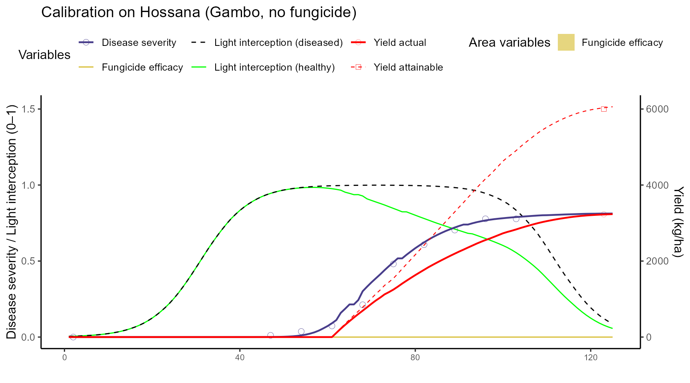
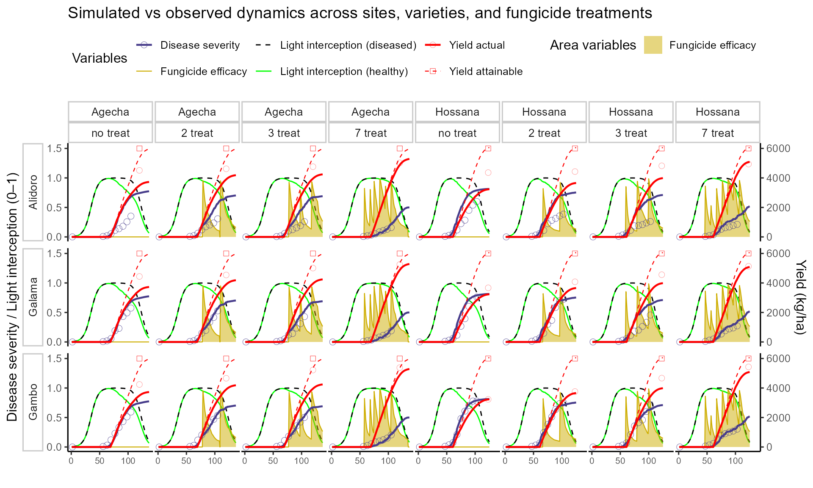

Septoria fungicide trials in Ethiopia
Source:vignettes/case-study-ethiopia-septoria-fungicide.Rmd
case-study-ethiopia-septoria-fungicide.Rmd🎯 Goal
This vignette demonstrates how to use FraNchEstYN to simulate yield losses under different fungicide treatment for Septoria tritici in Ethiopia, using data from fungicide trials on three varieties and two locations in 2012.
The workflow has three main steps:
-
Crop and disease calibration: adjust crop and
disease parameters using the most susceptible variety.
- Adapt varietal resistance and fungicide scheduling: simulate alternative fungicide schedules and varietal resistance levels.
Data are released with the package and were digitized from trial reports including weather (NASA POWER), reference disease observations, and management metadata.
📥 Data loading
Hourly weather data were queried from NASA POWER for Agecha and Hossana sites.
data(weather_ethiopia)
glimpse(weather_ethiopia)
#> Rows: 17,568
#> Columns: 9
#> $ Site <chr> "Agecha", "Agecha", "Agecha", "Agecha", "Agecha", "Agecha"…
#> $ lat <dbl> 7, 7, 7, 7, 7, 7, 7, 7, 7, 7, 7, 7, 7, 7, 7, 7, 7, 7, 7, 7…
#> $ YEAR <int> 2012, 2012, 2012, 2012, 2012, 2012, 2012, 2012, 2012, 2012…
#> $ MO <int> 1, 1, 1, 1, 1, 1, 1, 1, 1, 1, 1, 1, 1, 1, 1, 1, 1, 1, 1, 1…
#> $ DY <int> 1, 1, 1, 1, 1, 1, 1, 1, 1, 1, 1, 1, 1, 1, 1, 1, 1, 1, 1, 1…
#> $ HR <int> 0, 1, 2, 3, 4, 5, 6, 7, 8, 9, 10, 11, 12, 13, 14, 15, 16, …
#> $ T2M <dbl> 9.24, 8.75, 8.26, 7.74, 7.25, 6.70, 6.30, 10.10, 14.68, 19…
#> $ RH2M <dbl> 63.62, 60.29, 58.47, 58.81, 59.50, 60.31, 60.23, 44.76, 31…
#> $ PRECTOTCORR <dbl> 0, 0, 0, 0, 0, 0, 0, 0, 0, 0, 0, 0, 0, 0, 0, 0, 0, 0, 0, 0…📑 Disease and yield data
Reference observations come from fungicide trials. We filter here for the Gambo variety in one site (Hossana ) without fungicide (susceptible baseline). We will then apply the calibrated parameters on the other site (Agecha).
data(reference_ethiopia)
reference_data <- reference_ethiopia %>%
filter(variety == "Gambo", fungicide == "no", site == 'Hossana')
head(reference_data)
#> site variety fungicide year DOY Disease YieldActual YieldAttainable
#> 1 Hossana Gambo no 2012 201 0.00 NA NA
#> 2 Hossana Gambo no 2012 246 1.13 NA NA
#> 3 Hossana Gambo no 2012 253 3.66 NA NA
#> 4 Hossana Gambo no 2012 260 7.37 NA NA
#> 5 Hossana Gambo no 2012 267 21.23 NA NA
#> 6 Hossana Gambo no 2012 274 48.11 NA NA🧰 Management data
Basic management metadata (crop, sowing DOY, fungicide schedules) are included as management_ethiopia.
data(management_ethiopia)
management_data<-management_ethiopia |>
filter(site=='Hossana',fungicide=='no')
head(management_ethiopia)
#> site fungicide crop variety year sowingDOY treatment
#> 1 Hossana no wheat All 2012 201 0
#> 2 Agecha no wheat All 2012 204 0
#> 3 Hossana 2 wheat All 2012 201 Sep 23, Oct 23
#> 4 Agecha 2 wheat All 2012 204 Oct 8, Nov 8
#> 5 Hossana 3 wheat All 2012 201 Sep 16, Oct 6, Oct 26
#> 6 Agecha 3 wheat All 2012 204 Oct 7, Oct 27, Nov 16🌾🦠 Step 1 — Crop and disease calibration
We first calibrate crop parameters (cycle length, base/optimum temperature, RUE) together with key disease parameters for Septoria (senescence acceleration, light stealer damage). Calibration is performed on Gambo without fungicide.
thisCropParameters <- FraNchEstYN::disable_all_calibration(cropParameters$wheat)
thisCropParameters$TbaseCrop$value <- 2
thisCropParameters$ToptCrop$value <- 21
thisCropParameters$CycleLength$calibration <- TRUE
thisCropParameters$CycleLength$min <- 2100
thisCropParameters$CycleLength$max <- 2300
thisCropParameters$RadiationUseEfficiency$calibration <- TRUE
thisCropParameters$HalfIntSenescence$value<-90
thisDiseaseParam <- diseaseParameters$septoria
thisDiseaseParam$SenescenceAcceleratorDamage$calibration <- TRUE
thisDiseaseParam$SenescenceAcceleratorDamage$max <- 0.1
thisDiseaseParam$LightStealerDamage$min <- 0.1
thisDiseaseParam$AssimilateSappersDamage$calibration<-F
thisDiseaseParam$AssimilateSappersDamage$value<-0
thisDiseaseParam$OuterInoculumShapeRelease$value<-1
thisDiseaseParam$LightStealerDamage$min<-0
thisDiseaseParam$LightStealerDamage$max<-.3
thisDiseaseParam$HydroThermalTimeOnset$max<-5
thisDiseaseParam$CyclePercentageOnset$max<-10
thisDiseaseParam$CyclePercentageOnset$min<-0
weather_ethiopia_singlesite <- weather_ethiopia |>
filter(Site =='Hossana')
df_calib <- franchestyn(
weather_data = weather_ethiopia_singlesite,
management_data = management_data,
reference_data = reference_data,
cropParameters = thisCropParameters,
diseaseParameters = thisDiseaseParam,
calibration = "all",
start_end = c(2012,2012),
iterations = 999
)
sim <- df_calib$outputs$simulation📊 Plot after calibration (single site = Hossana)

💊 Step 2 — Varietal resistance and fungicide schedules We now extend simulations to the other site (Agecha), all varieties (Gambo, Galama, Alidoro) and fungicide schedules (no, 2, 3, 7). Only Varietal Resistance is adjusted per cultivar, while fungicide efficacy is applied through parameterized protectant functions.
#calibrated parameters
# Disable calibration (fix crop + disease params after step 1 calibration)
calibCrop <- FraNchEstYN::disable_all_calibration(df_calib$parameters$crop)
calibDisease <- FraNchEstYN::disable_all_calibration(df_calib$parameters$disease)
# Initialize empty list to store all simulation outputs
outputsSim <- list()
fungicideParam <- FraNchEstYN::disable_all_calibration(FraNchEstYN::fungicideParameters$protectant)
fungicideParam$TenacityFactor$value<-0.05
fungicideParam$DegradationRate$value<-0.02
fungicideParam$InitialEfficacy$value<-1
fungicideParam$AShapeParameter$value<-3
fungicideParam$BShapeParameter$value<-8
# 🔁 Loop over sites (e.g., Hossana, Agecha)
for (s in unique(reference_ethiopia$site)) {
# 🔁 Loop over varieties (Gambo, Galama, Alidoro)
for (var in unique(reference_ethiopia$variety)) {
# 🔁 Loop over fungicide treatments (no, 2, 3, 7)
for (f in unique(management_ethiopia$fungicide)) {
# Filter datasets for this site–variety–fungicide combination
ref_sub <- reference_ethiopia %>%
filter(site == s, variety == var, fungicide == f) # observed disease + yield
man_sub <- management_ethiopia %>%
filter(site == s, fungicide == f) # management schedule
weather_sub <- weather_ethiopia %>%
filter(Site == s) # weather for this site
# Skip this combination if any dataset is missing
if (nrow(ref_sub) == 0 | nrow(man_sub) == 0 | nrow(weather_sub) == 0) next
# Run simulation with FraNchEstYN
res <- franchestyn(
weather_data = weather_sub,
management_data = man_sub,
reference_data = ref_sub,
cropParameters = calibCrop,
diseaseParameters = calibDisease,
fungicideParameters = fungicideParam,
calibration = "none", # no further calibration, just simulate
start_end = c(2012,2012),
)
# If simulation produced outputs, store them in the list
if (!is.null(res$outputs$simulation)) {
outputsSim[[paste(s, var, f, sep = "_")]] <- res$outputs$simulation %>%
mutate(site = s, variety = var, fungicide = f) # tag outputs with metadata
}
}
}
}
# Combine all site–variety–fungicide simulations into one data frame
sim_all <- bind_rows(outputsSim)📊 Plot after looping across sites, varieties, fungicides

📝 Key take-home messages
FraNchEstYN successfully reproduced Septoria epidemics and yield losses observed in Ethiopia fungicide trials.
Calibration on the susceptible variety Gambo at Hossana provided a baseline that transferred well to Agecha and to other varieties.
Varietal resistance and fungicide scheduling strongly influenced epidemic progress and yield protection, with more resistant varieties and intensive spray schedules delaying disease development and sustaining yields.
The modeling framework captured multiple canopy processes simultaneously (light interception, disease severity, fungicide efficacy, attainable and actual yields), allowing a holistic assessment of crop loss.
Outputs are fully structured, enabling further diagnostics, parameter analysis, and scenario testing.
🚀 Next steps
- Apply the same workflow to other seasons or Ethiopian regions, by plugging in local weather and reference trial data.
- Test alternative fungicide parameterizations (protectant vs systemic, degradation rates, efficacy curves) to assess spray strategies.
- Explore genotype × environment × management interactions, by running varietal resistance levels under diverse climates.
- Assess uncertainty by increasing calibration iterations and comparing parameter stability across replicates.
- Extend this approach to economic or policy scenarios, estimating yield losses avoided through integrated disease management.